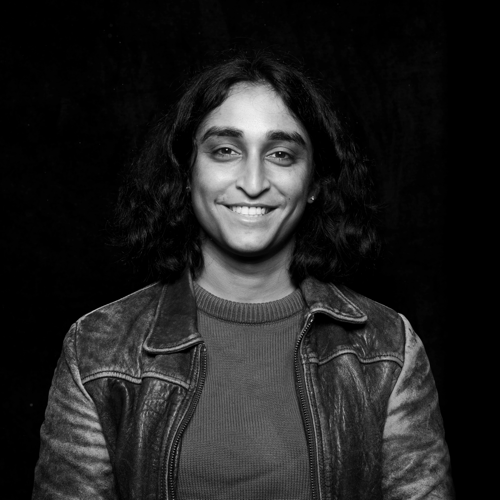

Hi! My name is Om Kelkar (she/her). I build planet-scale software systems at Meta, with a focus on AI Infrastructure. I currently work on the VM-as-a-service platform underpinning Muse.
I have also previously helped design & develop:
- IPNext, a modern inference serving platform for an increasingly heterogeneous fleet.
- Capacity Fabric, tooling to dynamically allocate GPU supply based on multiple demand levers (product budgets, ROI, regionality, etc).
Outside of the office, I am an avid cyclist, reader, and camera tinkerer. Bikes are cool. Sometimes, I write about my bicycle trips.